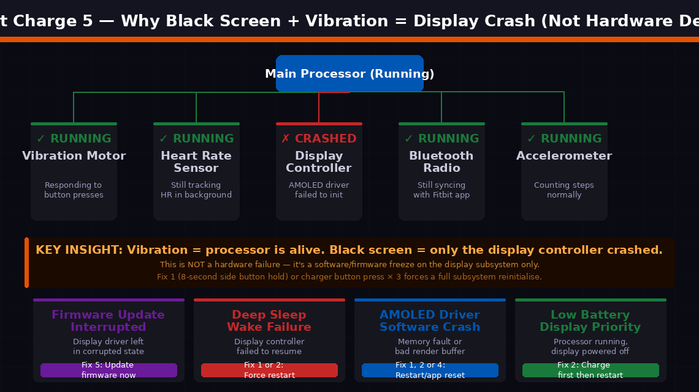
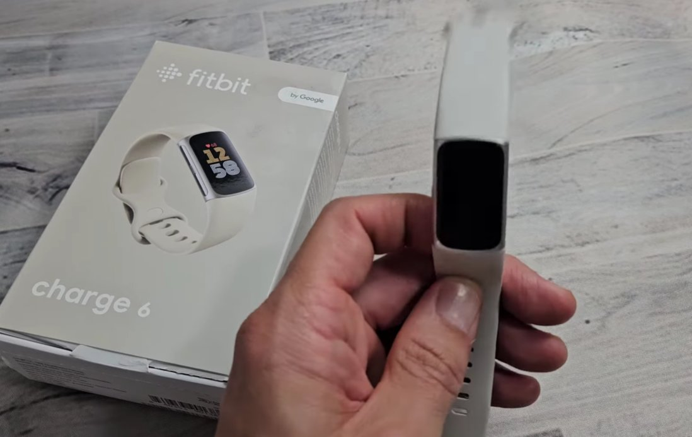
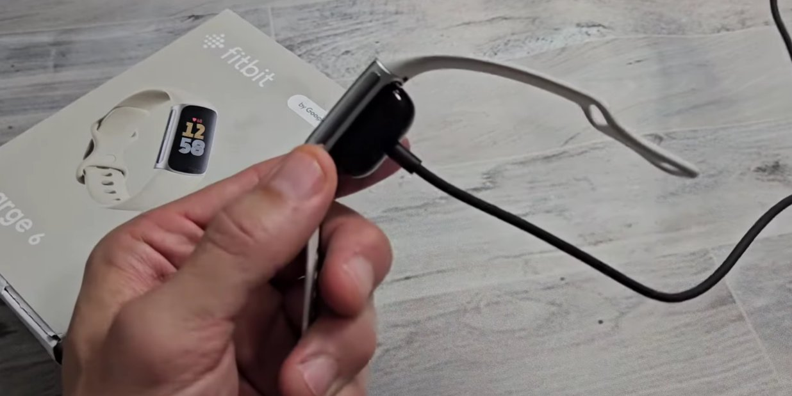
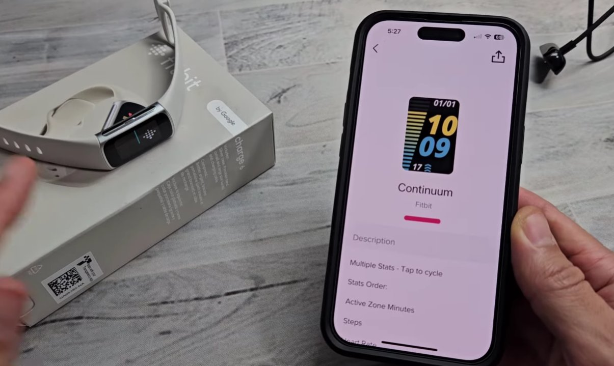
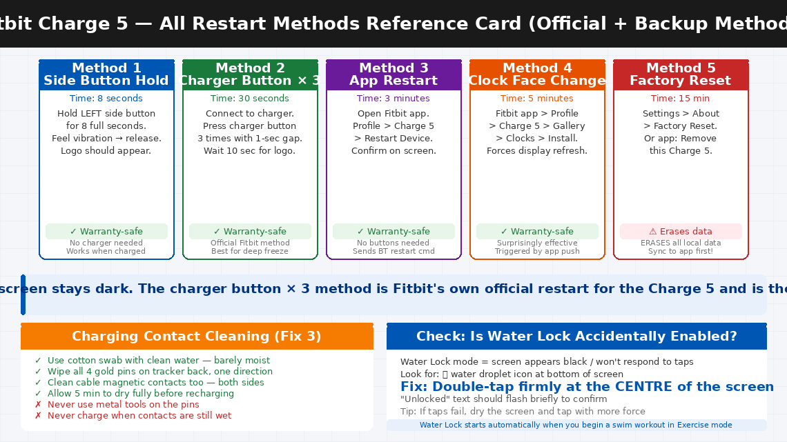

It’s Buzzing. The Screen Is Just… Not There.
There’s nothing more disorienting than glancing at your wrist mid-workout to check your heart rate — and finding your Fitbit Charge 5 completely dark. Not dimmed. Not sleeping. Completely black. But when you tap it or press the side button, you feel that familiar buzz. The device is very much alive. It’s tracking something. It’s responding to touch. There’s just absolutely nothing on the screen.
You tap again. Vibration. Still black. You press the side button. Vibration. Still black. You plug it in to charge — the charging indicator buzzes — but the display stays dark. At this point you’re wearing what feels like a very sophisticated bracelet that has decided screens are optional.
Here’s the important part: a black screen that still vibrates is one of the clearest signs that your Fitbit Charge 5’s hardware is functioning normally. The vibration motor, the sensors, the charging circuit — all working. The problem is isolated to the display controller, and in the vast majority of cases it’s a software freeze that a proper restart sequence will clear completely.
What Does Black Screen + Vibration Actually Mean?
The combination of a black screen and a still-functional vibration motor is actually a very useful diagnostic signal. The vibration means the Charge 5’s processor and firmware are running, but the display subsystem has frozen, crashed, or lost its power signal.
The Fitbit Charge 5 has several independent subsystems — the main processor, the display controller, the heart rate sensor, the accelerometer, the vibration motor, the Bluetooth radio, and the charging circuit. When the display controller crashes or loses its initialisation state, the screen goes dark. But because the main processor is still running, the device continues to respond to button presses with haptic feedback, continues tracking steps and heart rate in the background, and continues syncing data via Bluetooth.
The three most common causes:
- A firmware update installed incompletely — if an update installs while the battery is low or the connection drops mid-install, the display driver can be left in a corrupted state that prevents the screen from initialising on the next boot.
- Deep sleep mode wake failure — the display controller failed to wake up properly when activity was detected after the device was stationary for several hours.
- The AMOLED display’s driver crashed — caused by a memory fault, a corrupted display buffer, or a bad rendering instruction pushed by an incompatible app update.

Check Water Lock Before Anything Else
Before attempting any restart, quickly rule out one of the most overlooked causes: Water Lock mode accidentally activated. The Charge 5 has a Water Lock feature that prevents accidental screen interaction during swimming — it disables all touchscreen input. When Water Lock is on, the screen appears completely unresponsive to taps, which can look identical to a black screen freeze.
Look at the bottom of the screen. If you see a 💧 water droplet icon, Water Lock is active. The fix is simple: double-tap firmly at the centre of the screen. If you don’t see the “Unlocked” text appear, try again with more force — Water Lock uses the accelerometer to detect taps rather than capacitive touch, so firm, direct taps are needed. If there’s no water droplet and the screen is genuinely black with no image at all, proceed to the fixes below.
What You’ll Need
- Your Fitbit Charge 5
- The original Fitbit magnetic charging cable (specific to the Charge 5 — not USB-C)
- A wall charger rated at 5V / 1A
- The Fitbit app on your smartphone (for Fix 4 and Fix 5)
- A cotton swab and clean water (for Fix 3)
- About 10–30 minutes of your time
6 Step-by-Step Fixes
Work through these in order. The black screen with vibration clears at Fix 1 or Fix 2 for the overwhelming majority of Charge 5 users.
The Charge 5 supports a hardware-level force restart that bypasses the frozen display driver and forces the entire device — including the display subsystem — to reinitialise from scratch.
- Locate the side button on the left edge of the Charge 5 — the single physical button on the device body.
- Press and hold the side button for 8 seconds.
- You will feel the device vibrate — this confirms the restart command has been received.
- Continue holding for the full 8 seconds even after the vibration. Release after 8 seconds.
- The Fitbit logo or a startup animation should appear on the screen within 5–10 seconds of releasing the button.
- If the screen remains black but the device vibrates during the hold, wait 15 seconds after releasing, then tap the screen once.
- If the display comes on, the freeze is cleared. Check your data in the Fitbit app to confirm everything is intact.
This is Fitbit’s own official restart method specifically designed for the Charge 5, and it is often more effective than the side button hold for deep freeze states because it triggers the restart through the charging circuit rather than the device firmware.
- Connect the Charge 5 to its magnetic charging cable and plug into a wall charger.
- Position the magnetic contacts carefully — the clip should attach firmly to the back of the tracker. Confirm charging has started — the screen may briefly show a battery icon, or the device may vibrate once.
- Leave the device charging for 10–15 minutes without touching it if the battery is critically low.
- Then, while still on the charger: press the button on the flat end of the charging cable 3 times, pausing for 1 second between each press.
- Wait approximately 10 seconds.
- The Fitbit logo should appear on the screen, followed by normal startup. The device will also vibrate to confirm restart.
- If nothing happens after the first attempt, repeat the charger button ×3 sequence once more before moving on.

A Charge 5 that appears to charge (vibrates when the cable attaches) but never fully recovers the display may not actually be receiving sufficient current because dirty or corroded magnetic charging contacts are delivering an inconsistent connection.
- Unplug the charging cable from the wall and disconnect it from the Charge 5.
- Inspect the four charging pins on the back of the Charge 5 — the small gold-coloured dots the magnetic cable attaches to. Look for sweat residue, white mineral deposits, or dark oxidation on the pin surfaces.
- Lightly dampen a cotton swab with clean water — squeeze out all excess so the swab is barely moist.
- Gently wipe across all four pins in one direction. Do not scrub back and forth.
- Allow to dry completely for 5 minutes.
- Similarly clean the magnetic contacts on the charging cable using a dry part of the cotton swab.
- Reconnect the cable and attempt Fix 2 again with the freshly cleaned contacts.

If the physical button and charger methods haven’t worked, the Fitbit app on your smartphone can send a restart command directly to the Charge 5 over Bluetooth — which sometimes succeeds where button methods don’t, because it triggers the restart through a different firmware code path.
- Open the Fitbit app on your smartphone.
- Tap the profile icon in the top left corner.
- Select your Charge 5 from the device list.
- Scroll down and tap Restart Device.
- Confirm when prompted.
- The Charge 5 should vibrate and restart. Watch for the display to come on within 10 seconds.
- If the Restart Device option is greyed out, the Charge 5 may not be connected via Bluetooth. Toggle your phone’s Bluetooth off and back on to force a fresh connection, then try again.
Bonus fix — Change Clock Face via App: This is a surprisingly effective method reported by many Charge 5 users. Go to Profile → Charge 5 → Gallery → Clocks and install any different clock face. This forces the app to push a display refresh command to the device, which often wakes the screen when a restart doesn’t.
If the Charge 5 screen comes back on after any of the above restarts but the black screen issue returns within hours or days, a corrupted or outdated firmware version is the most likely cause. Updating reinstalls the display drivers and often permanently resolves recurring black screen issues.
- Once the Charge 5 display is functional after a restart, open the Fitbit app immediately.
- Go to Profile → Charge 5 → Update.
- If a firmware update is available, install it while the device is charged above 50% and within Bluetooth range of your phone.
- Keep the Fitbit app in the foreground throughout the update — closing the app or letting your phone lock during a firmware update can interrupt the process and cause exactly the display driver corruption that leads to the black screen.
- After the update completes, the Charge 5 will restart automatically. Allow it to fully initialise before checking function.

If the black screen keeps returning after restarts and firmware is current, a factory reset clears all locally stored data and settings, returning the firmware to a clean state that eliminates any software corruption causing the display driver to crash repeatedly.
- First, sync the device — open the Fitbit app and ensure the last sync time shows as “just now.”
- On the Charge 5, navigate to Settings → About → Factory Reset.
- Confirm the factory reset on the device.
- Alternatively, from the Fitbit app: go to Profile → Charge 5 → Remove this Charge 5 — this factory resets the device and removes it from your account for a fresh pairing.
- After the reset, set up the Charge 5 as a new device through the Fitbit app.
- Monitor over the next 48 hours — if the black screen does not recur, software corruption was the cause and the issue is resolved.

When to Contact Fitbit Support
The Fitbit Charge 5 black screen is almost always a software issue that responds to one of the fixes above. But there are situations where the hardware itself needs attention.
- None of the restart methods produce any screen response, and the device continues to vibrate with no display even after a full charge cycle. The AMOLED display panel itself may have failed.
- The screen comes back on but shows distortion — vertical lines, colour banding, a dim image, or patches of dead pixels. These indicate a failing display panel rather than a software issue.
- The charging contacts are damaged, corroded beyond cleaning, or physically bent. Charging contact repair requires micro-soldering on a sealed device.
- The black screen returns within minutes of every restart, even after a factory reset and fresh firmware installation. Persistent rapid-recurrence points to a hardware fault in the display driver chip or power delivery.
- Your Charge 5 is within its warranty period. Fitbit offers a 1-year limited warranty on the Charge 5. A persistent black screen under normal use is a warranty claim.
To reach Fitbit / Google support:
- India: fitbit.com/global/in/support — Live chat typically under 10 minutes response time
- US: fitbit.com/global/us/support — Phone: 1-877-623-4997
- Also accessible through the Fitbit app: Profile → Help → Contact Support
Have your Charge 5’s serial number ready — found in the Fitbit app under Profile → Charge 5 → About, or on the back of the device under the band.
Quick Summary
| Fix | Difficulty | Time Needed |
|---|---|---|
| Force restart via 8-second side button hold | Very Easy | 1 minute |
| Charger button ×3 while connected (official method) | Very Easy | 15 minutes |
| Clean charging contacts (cotton swab + water) | Easy | 5 minutes |
| Restart via Fitbit app / change clock face | Very Easy | 3 minutes |
| Update firmware via Fitbit app | Easy | 10 minutes |
| Factory reset and re-pair as new device | Moderate | 15 minutes |
Start with Fix 1 every single time. The 8-second side button hold is the correct, purpose-built fix for this problem — and holding for the full 8 seconds rather than stopping at the first vibration is the detail most people miss. Follow immediately with Fix 2’s charger button ×3 if the screen stays dark. The combination resolves the black screen for the vast majority of Charge 5 users within fifteen minutes.